sqrt(256)[1] 16ggplot()R is a programming language. In this workshop, we’re going to be working in RStudio, an Integrated Development Environment that lets us easily write and edit code.

The RStudio user interface has 4 primary panes:
Source pane: allows you to view and edit various code-related files.
Console pane: provides an area to interactively execute code.
Environment pane: displays currently saved R objects.
Output pane: contains the Files, Plots, Packages, and Help tabs.

Before we start working with code, we want to create a document we can save it in! This can be as basic as a .R document that just has code inside it.
We recommend that you try making a .qmd document. Quarto is an awesome tool & this document format lets you see the images you create & write text around your code to create reports and other output types:
File > New File > Quarto Document
Copy and paste the code from this document into your script and run it to follow along.
There are a few ways to run code:
Click the line and select CTRL + ENTER
Highlight the line and select CTRL + ENTER
Click the line and click ‘Run’ in the top menu bar
In a R or Quarto Markdown document, you can click the green ‘play’ button to run all of the code in the current chunk. Code chunks run from ```{r} to the next ``` . Each chunk should have a unique name.
You can also copy and paste (or type) code directly into the console pane after the ‘>’ prompt. Select ENTER to run the code.
To make something happen in R, you use a function. For example, the sqrt function calculates the square root of a given number. To use a function, you’ll need to write it’s name with parentheses.
The inputs you give a function go inside those parentheses - these are called arguments.
For example, we can use the sqrt() function to calculate the square root of 256, by providing that number as our argument.
Try copy and paste this into your code document and run it to see the output.
sqrt(256)[1] 16In it’s simplest form, R code works like this:
object <- function(argument)
where:
an object holds a value e.g., the output of a function, a dataframe, a list.
the left arrow operator <- assigns a value.
A function does something e.g., performs a calculation, plots observations.
An argument is an input or parameter e.g., the data or a setting you want to use.
R comes prepackaged with some default functions. You can install packages to get access to new collections of functions.
We can install new packages using the install.packages() function.
We only need to download and install a package once.
#Many popular R packages are hosted on CRAN (Comprehensive R Archive Network)
#these can be installed with the install.packages() function
install.packages("tidyverse")However, every time we open RStudio, we need to load the packages we want to use in that session using the library() function.
library(tidyverse)If you want to use the output of R functions later, you’ll need to save them. In R, you can save outputs and results by creating an object.
To create an object, type a name for the object and use the <- arrow to store a value in the object. You can call this literally anything you like, so long as it’s one string of characters.
my_favourite_number <- 256
my_favourite_number #this object holds the value '256'
sqrt(my_favourite_number)
my_new_favourite_number <- sqrt(my_favourite_number) #what value is stored in this new object?Let’s install and load the flametree package to create a some tree aRt!
install.packages("flametree") #installing an R package that makes tree images
library(flametree) #loading the packageCreate your beautiful aRt (R art):
#using the flametree_grow() and flametree_plot() functions to generate a tree image
my_beautiful_art <- flametree_grow(time=7, trees=15) %>%
flametree_plot(background="gray10",
palette=c("antiquewhite","coral","cyan4","goldenrod"),
style="nativeflora")
#let's take a look at the plot object we generated
my_beautiful_art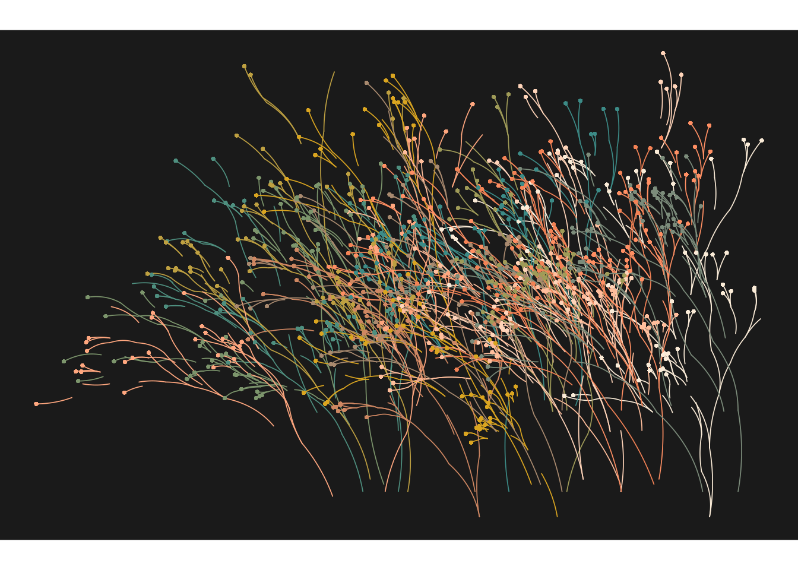
Once you’ve run this code, see what happens when:
You change the names of the colours in the palette argument. You can find a list of R colour names online, alongside a number of colour palette packages like RColorBrewer, viridis, and more. This tree is based on a Wes Anderson-inspired colour palette. Make sure colour names go inside quotation marks e.g., "forestgreen".
You change the tree style e.g., to “wisp” or “voronoi”.
You change the numeric value of the tree parameter.
The Palmer penguins dataset contains size measurements for three penguin species observed on three islands in the Palmer Archipelago, Antarctica.
This data was collected from 2007 to 2009 by the US Long Term Ecological Research Network.

Before we start working on our code, we want to create an .qmd document we can save it in!
File > New File > Quarto Document
To make sure your code is reproducible, it’s good practice to load all the packages you need at the start of your document, using the library() function.
install.packages("tidyverse")
library(tidyverse)
install.packages("palmerpenguins")
library(palmerpenguins)Tidyverse is a collection of packages used for data manipulation, filtering, and visualization. Today, we’ll use functions from tidyverse to import data and create some plots.
Let’s take a look at our new data object.
#the head() function shows us the first 6 rows of data
head(penguins)# A tibble: 6 × 8
species island bill_length_mm bill_depth_mm flipper_length_mm body_mass_g
<fct> <fct> <dbl> <dbl> <int> <int>
1 Adelie Torgersen 39.1 18.7 181 3750
2 Adelie Torgersen 39.5 17.4 186 3800
3 Adelie Torgersen 40.3 18 195 3250
4 Adelie Torgersen NA NA NA NA
5 Adelie Torgersen 36.7 19.3 193 3450
6 Adelie Torgersen 39.3 20.6 190 3650
# ℹ 2 more variables: sex <fct>, year <int>We can also use the glimpse() function to take a look at this object.
#the glimpse() function shows us the variables and what type of data they are (e.g., numeric or character strings)
glimpse(penguins)Rows: 344
Columns: 8
$ species <fct> Adelie, Adelie, Adelie, Adelie, Adelie, Adelie, Adel…
$ island <fct> Torgersen, Torgersen, Torgersen, Torgersen, Torgerse…
$ bill_length_mm <dbl> 39.1, 39.5, 40.3, NA, 36.7, 39.3, 38.9, 39.2, 34.1, …
$ bill_depth_mm <dbl> 18.7, 17.4, 18.0, NA, 19.3, 20.6, 17.8, 19.6, 18.1, …
$ flipper_length_mm <int> 181, 186, 195, NA, 193, 190, 181, 195, 193, 190, 186…
$ body_mass_g <int> 3750, 3800, 3250, NA, 3450, 3650, 3625, 4675, 3475, …
$ sex <fct> male, female, female, NA, female, male, female, male…
$ year <int> 2007, 2007, 2007, 2007, 2007, 2007, 2007, 2007, 2007…drop_na()We can see some N/A values in the raw data above. We can remove these with the drop_na() function.

penguins_nafree <- drop_na(penguins)
glimpse(penguins_nafree)Rows: 333
Columns: 8
$ species <fct> Adelie, Adelie, Adelie, Adelie, Adelie, Adelie, Adel…
$ island <fct> Torgersen, Torgersen, Torgersen, Torgersen, Torgerse…
$ bill_length_mm <dbl> 39.1, 39.5, 40.3, 36.7, 39.3, 38.9, 39.2, 41.1, 38.6…
$ bill_depth_mm <dbl> 18.7, 17.4, 18.0, 19.3, 20.6, 17.8, 19.6, 17.6, 21.2…
$ flipper_length_mm <int> 181, 186, 195, 193, 190, 181, 195, 182, 191, 198, 18…
$ body_mass_g <int> 3750, 3800, 3250, 3450, 3650, 3625, 4675, 3200, 3800…
$ sex <fct> male, female, female, female, male, female, male, fe…
$ year <int> 2007, 2007, 2007, 2007, 2007, 2007, 2007, 2007, 2007…We can see that the NA values are gone, and 11 rows have been removed!
ggplot() is a function that creates plots.
Like a piece of art, we start with a base canvas where we set up our framework. We then use a + symbol to add layers on top.

Every ggplot has three components:
data - your filtered data, ready for visualisation.aesthetic mappings - this defines which variables we plot.geom layer(s) - this defines how we visualise the observations.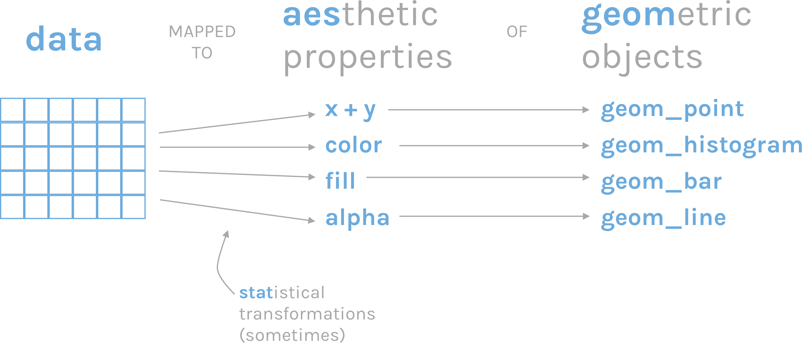
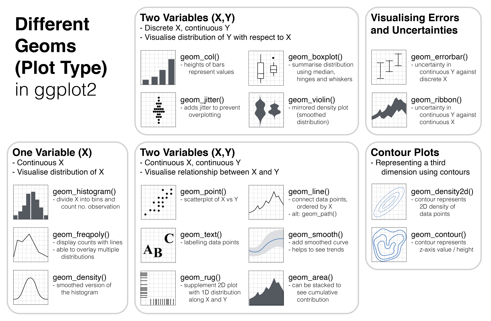
Creating the base:
#setting the x and y axis variables
ggplot(data = penguins_nafree, aes(x = bill_length_mm, y = bill_depth_mm))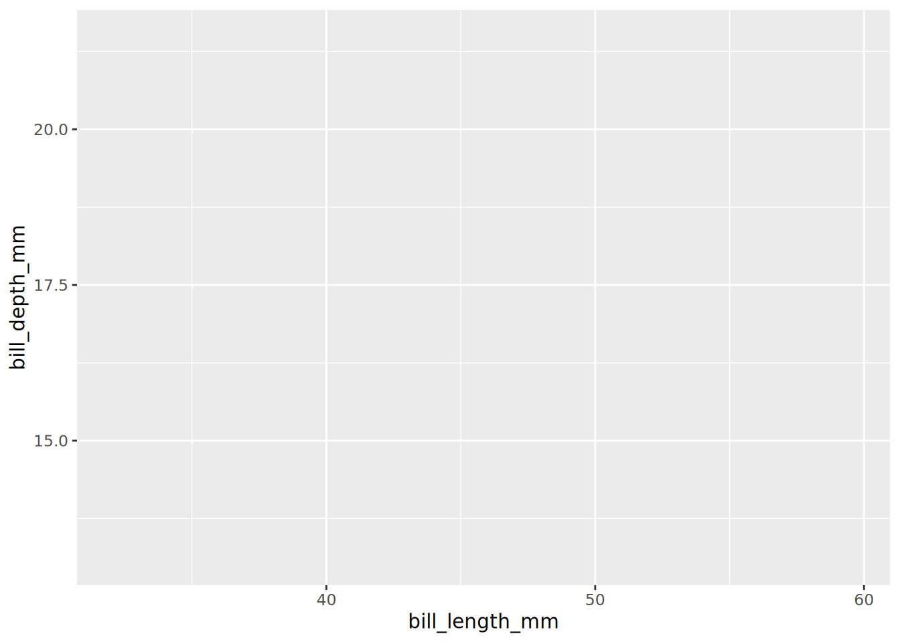
Adding a geom layer with geom_point():
ggplot(data = penguins_nafree, aes(x = bill_length_mm, y = bill_depth_mm)) +
geom_point(size = 2) #geom_point() creates a scatterplot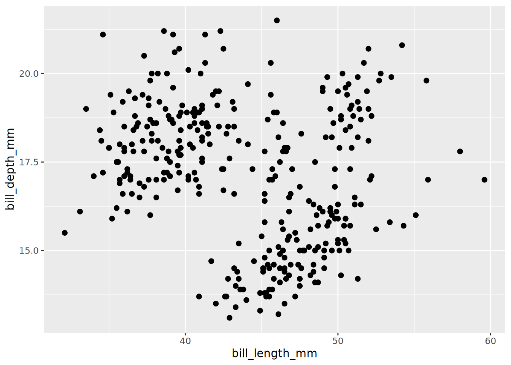
Specifying point colour and shape:
ggplot(data = penguins_nafree, aes(x = bill_length_mm, y = bill_depth_mm)) +
geom_point(aes(color = species, shape = species),size = 2)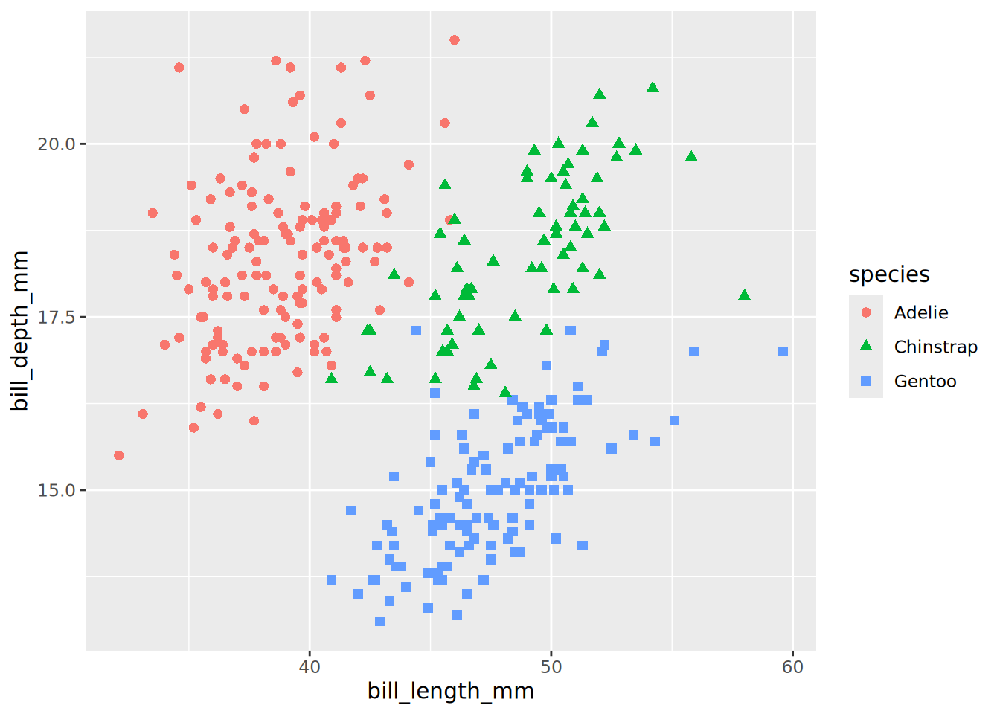
Adding a custom colour palette:
ggplot(data = penguins_nafree, aes(x = bill_length_mm, y = bill_depth_mm)) +
geom_point(aes(color = species, shape = species),size = 2) +
scale_color_manual(values = c("darkorange","darkorchid","cyan4"))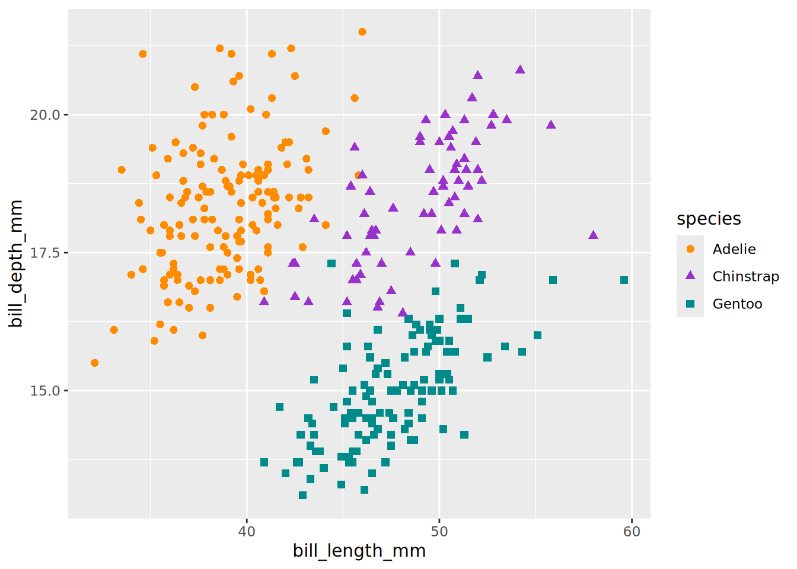
Adding custom axis labels:
ggplot(data = penguins_nafree, aes(x = bill_length_mm, y = bill_depth_mm)) +
geom_point(aes(color = species, shape = species),size = 2) +
scale_color_manual(values = c("darkorange","darkorchid","cyan4")) +
labs(x="Bill length (mm)", y="Bill depth (mm)", color = "Penguin species", shape = "Penguin species")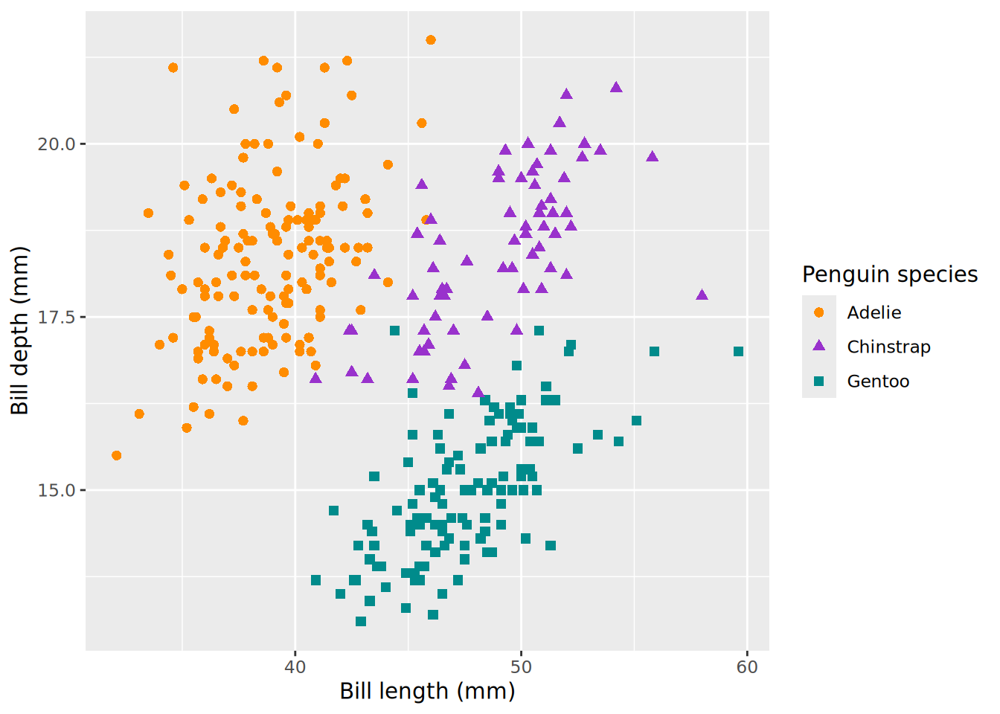
Adding a theme:
ggplot(data = penguins_nafree, aes(x = bill_length_mm, y = bill_depth_mm)) +
geom_point(aes(color = species, shape = species),size = 2) +
scale_color_manual(values = c("darkorange","darkorchid","cyan4")) +
labs(x="Bill length (mm)", y="Bill depth (mm)", color = "Penguin species", shape = "Penguin species") +
theme_classic() #applying the classic theme to remove the background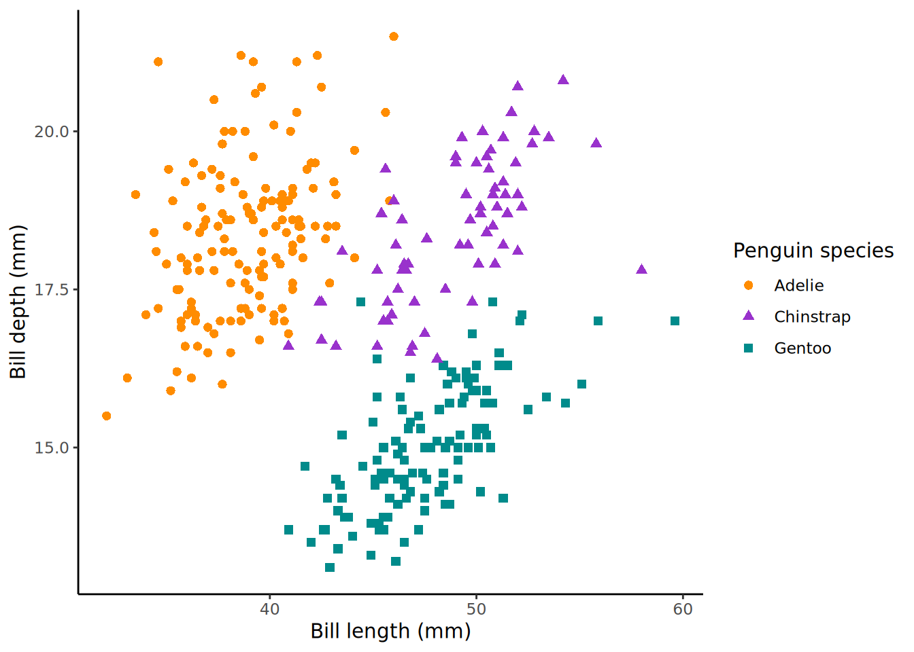
Creating the base:
ggplot(data = penguins_nafree, aes(x = species, y = flipper_length_mm))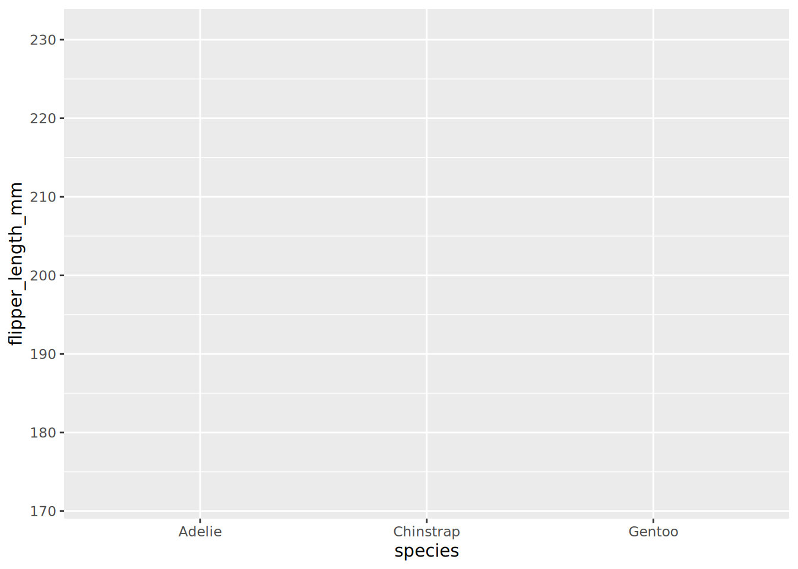
Adding a geom layer with geom_boxplot():
ggplot(data = penguins_nafree, aes(x = species, y = flipper_length_mm)) +
geom_boxplot()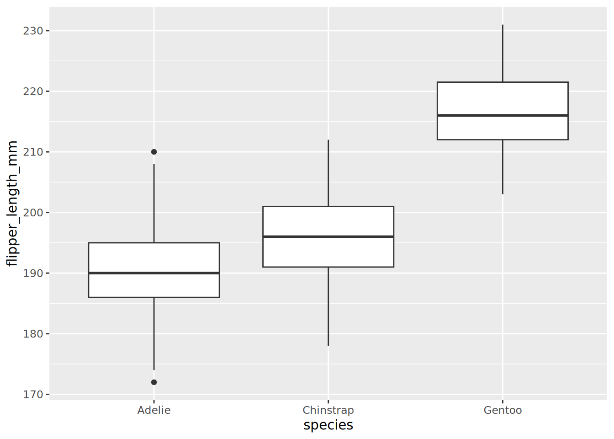
Specifying the boxplot (outline) colour:
ggplot(data = penguins_nafree, aes(x = species, y = flipper_length_mm)) +
geom_boxplot(aes(color=species)) +
scale_color_manual(values = c("darkorange","darkorchid","cyan4"), name = "Species") 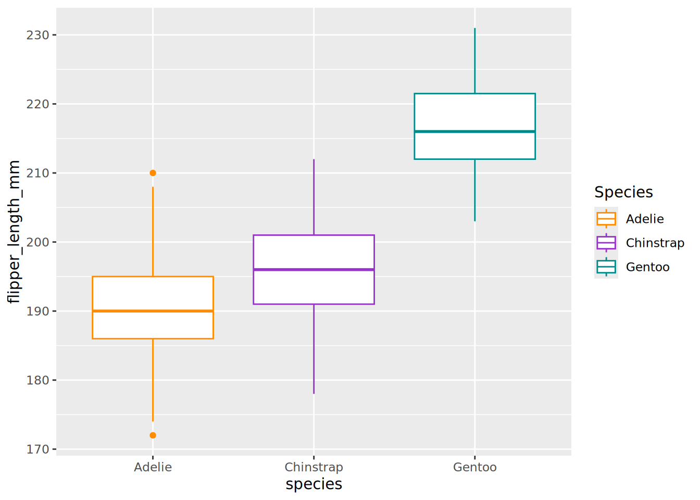
Specifying the boxplot (fill) colour:
#'alpha' sets the fill transparency to 50%
ggplot(data = penguins_nafree, aes(x = species, y = flipper_length_mm)) +
geom_boxplot(aes(color=species, fill=species), alpha=0.5) +
scale_color_manual(values = c("darkorange","darkorchid","cyan4"), name = "Species") +
scale_fill_manual(values = c("darkorange","darkorchid","cyan4"), name = "Species") 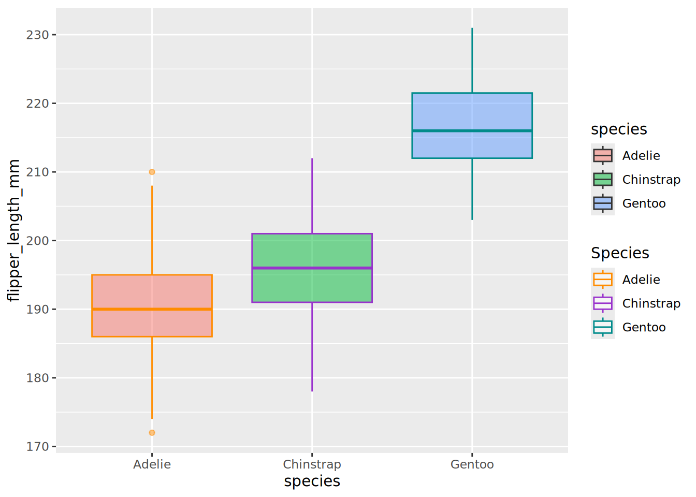
Adding axis labels:
ggplot(data = penguins_nafree, aes(x = species, y = flipper_length_mm)) +
geom_boxplot(aes(color=species, fill=species), alpha=0.5)+
scale_color_manual(values = c("darkorange","darkorchid","cyan4"), name = "Species") +
scale_fill_manual(values = c("darkorange","darkorchid","cyan4"), name = "Species") +
labs(x="Penguin species", y="Flipper length (mm)") 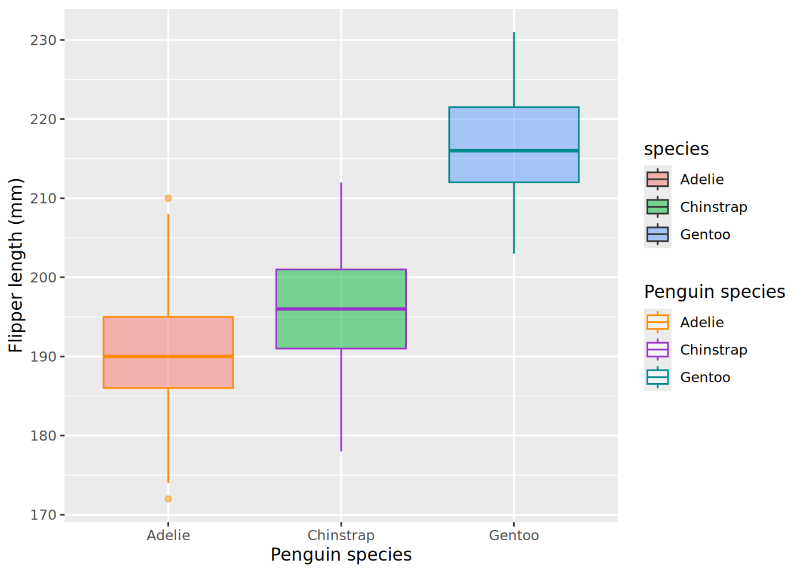
Adding jitter points:
ggplot(data = penguins_nafree, aes(x = species, y = flipper_length_mm)) +
geom_boxplot(aes(color=species, fill=species), alpha=0.5) +
scale_color_manual(values = c("darkorange","darkorchid","cyan4"), name = "Species") +
scale_fill_manual(values = c("darkorange","darkorchid","cyan4"), name = "Species") +
labs(x="Penguin species", y="Flipper length (mm)") +
geom_jitter(aes(color = species), alpha = 0.5)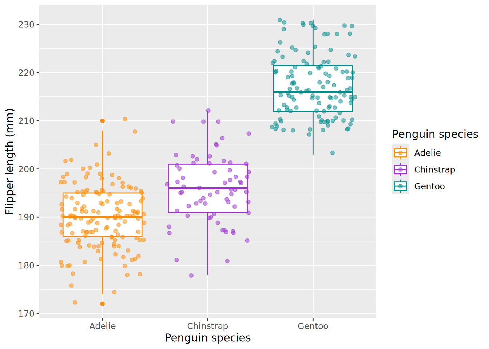
Adding a theme:
ggplot(data = penguins_nafree, aes(x = species, y = flipper_length_mm)) +
geom_boxplot(aes(color=species, fill=species), alpha=0.5) +
scale_color_manual(values = c("darkorange","darkorchid","cyan4"), name = "Species") +
scale_fill_manual(values = c("darkorange","darkorchid","cyan4"), name = "Species") +
labs(x="Penguin species", y="Flipper length (mm)") +
geom_jitter(aes(color = species), alpha = 0.5) +
theme_classic() 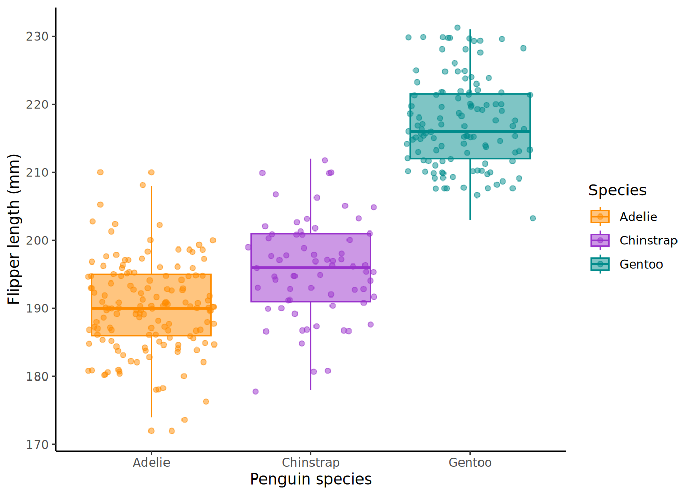
Creating the base:
ggplot(data = penguins_nafree, aes(x = species))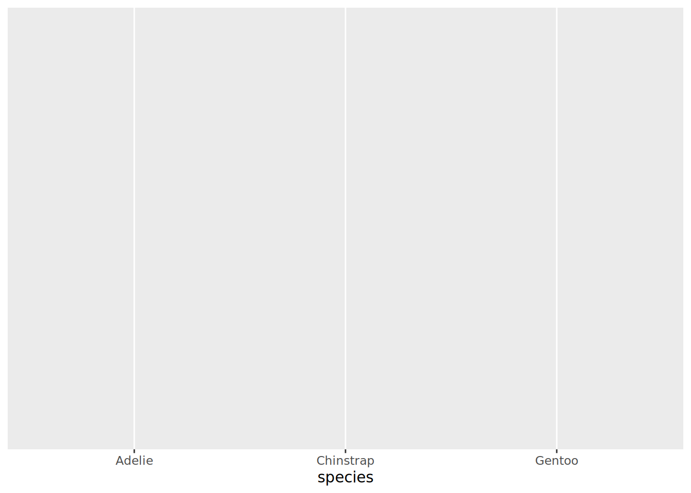
Adding a geom layer with geom_bar():
ggplot(data = penguins_nafree, aes(x = species)) +
geom_bar(aes(fill=sex), position="dodge")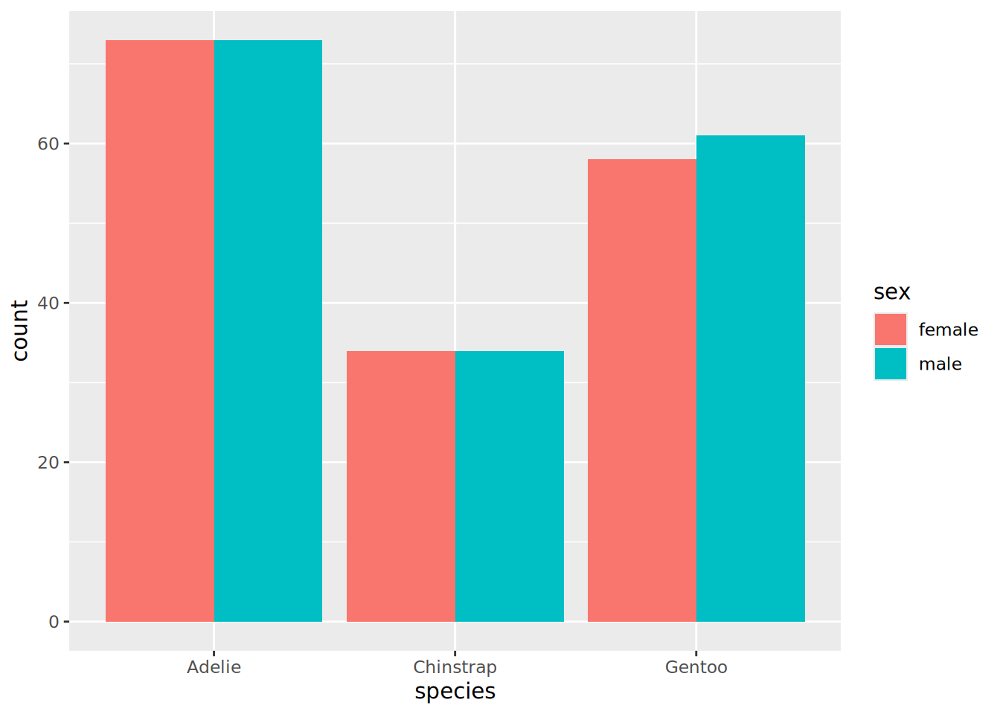
Subsetting the plot by a variable with facet_wrap():
ggplot(data = penguins_nafree, aes(x = species)) +
geom_bar(aes(fill=sex), position="dodge") +
facet_wrap(~island)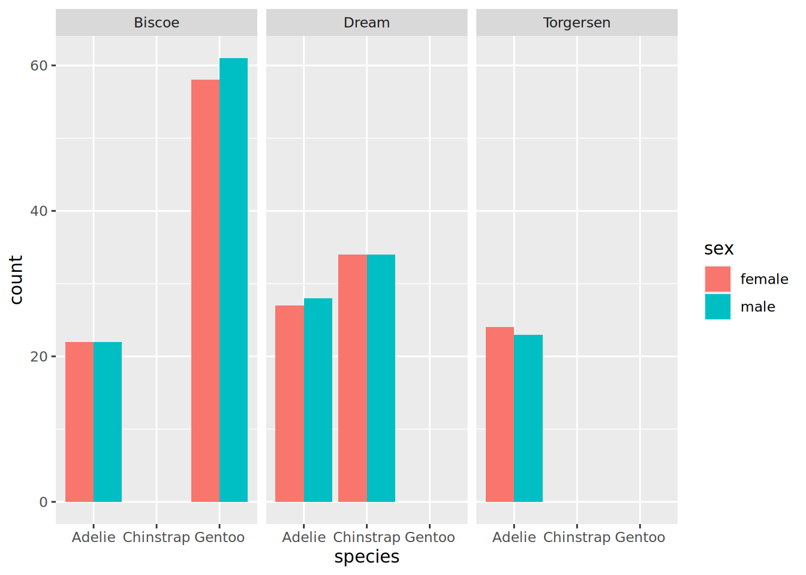
Adding a custom colour palette:
ggplot(data = penguins_nafree, aes(x = species)) +
geom_bar(aes(fill=sex), position="dodge") +
facet_wrap(~island) +
scale_fill_manual(values = c("lightpink1", "skyblue1"), name = "Sex") 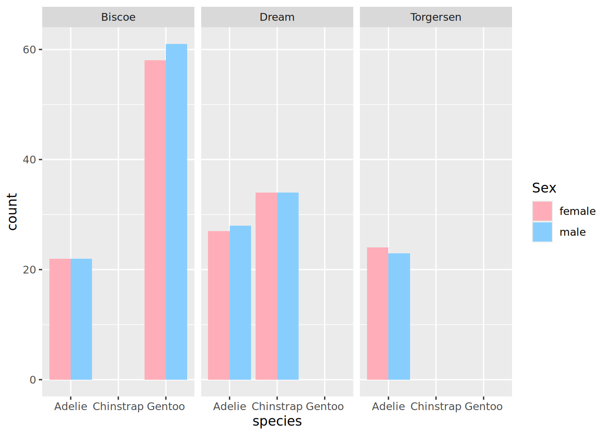
Adding labels and a theme:
ggplot(data = penguins_nafree, aes(x = species)) +
geom_bar(aes(fill=sex), position="dodge") +
facet_wrap(~island) +
scale_fill_manual(values = c("lightpink1", "skyblue1"), name = "Sex") +
labs(y="Frequency", x="Penguin species") +
theme_bw() #adding the black and white theme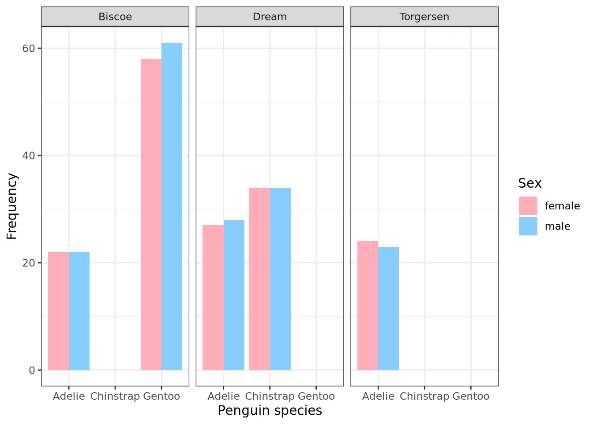
What to do when you get an error:
Google the error message
Try the suggested solutions
Read about the function
Ask for help
Check the easy stuff:
Did you forget to run any code?
Check for spelling mistakes (including capital letters)
Check your parentheses, quotation marks, and commas
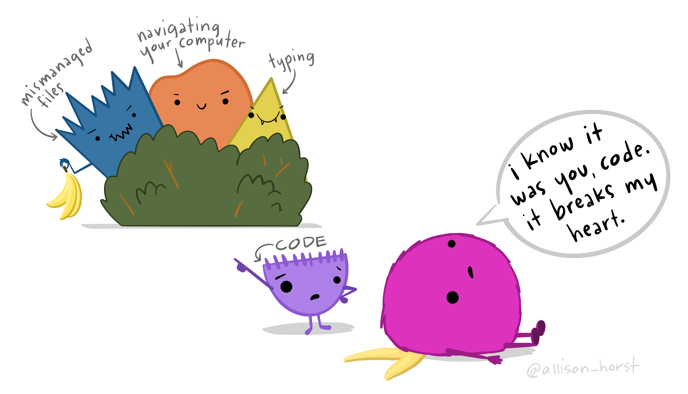
Posit cheatsheets will help you use your favourite tidyverse packages!
R for Data Science, ggplot2: Elegant Graphics for Data Analysis, and Advanced R are all free online books published by Hadley Wickham.
Friends Don’t Let Friends Make Bad Graphs by Chenxin Li.
.png)